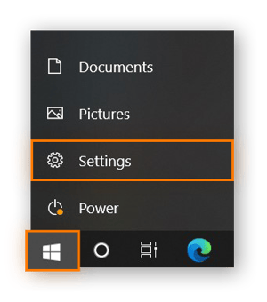
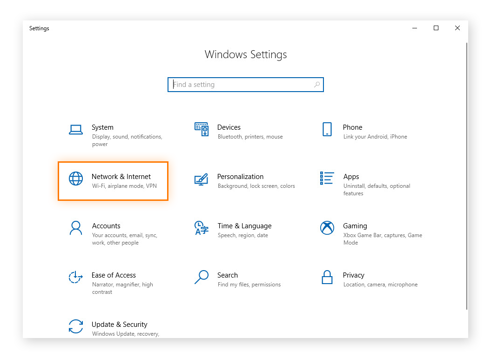
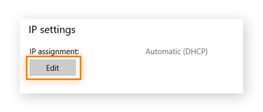
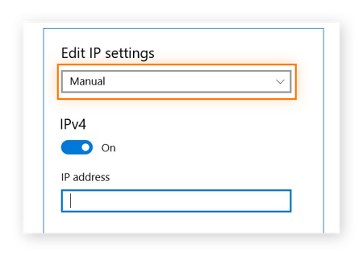
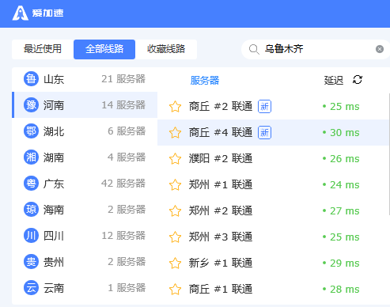

什麼是IP地址？
IP地址是分配給TCP/IP網絡上每個設備的唯一編號。就像您的實際家庭住址讓人們知道將您的生日賀卡寄往何處一樣，IP地址可以識別計算機和設備並讓它們相互通信。
在內部，IP地址存儲為數字。雖然計算機樂於使用數字，但人類更喜歡名字。Internet 使用域名系統 (DNS) 作為 Internet 通訊錄，因此您可以使用文字（例如 www.avast.com）而不是數字來瀏覽 Internet 併為網絡上的設備尋址。這些設備可能是任何可以聯網的設備：電腦、電視、智能揚聲器，甚至可能是你的冰箱。如今，您家中幾乎所有電子設備都可以擁有IP地址。
當您在Web瀏覽器中鍵入 URL 時，它會使用 DNS 查找該域的IP地址。例如，如果您在瀏覽器中鍵入 www.avast.com，DNS 會返回多個IP地址之一，包括 77.234.41.52。
常用的IP地址有兩個版本：IPv4 和 IPv6。
IPv4 有四個用句點分隔的十六進制數字——例如 192.168.0.1
而 IPv6 有六個用冒號分隔的十六進制數字——比如 2001:0db8:85a3:0000:0000:8a2e:0370:7334。
有將近 43 億個 IPv4 地址，我們幾乎使用了所有這些地址。IPv6 地址要多得多。在宇宙熱寂之前，我們不會用完 IPv6 地址。
什麼是靜態IP地址？
靜態IP地址只是一個不會改變的地址。一旦為您的設備分配了靜態IP地址，該數字通常會保持不變，直到設備停用或您的網絡架構發生變化。靜態IP地址通常由服務器或其他重要設備使用。
如何設置靜態IP地址？
要獲得靜態IP地址，您需要聯繫您的ISP（互聯網服務提供商）並向他們請求。然後，您可以更改常規IP地址並在Windows設置中設置靜態IP地址。請注意，創建靜態IP地址是一項高級網絡功能，需要具備TCP/IP協議的基本知識。
使用ISP分配給您的靜態IP地址，以下是在 Windows 10設備上手動輸入IP地址的方法：
1、單擊“開始”，然後單擊“設置”。請注意，您需要管理員權限。
2、 在設置窗口中選擇網絡和 Internet 。
3、單擊本地連接字段下的屬性。

4、 單擊IP 分配下的編輯。
5、 選擇Manual，打開IPv4按鈕，然後輸入IP地址。單擊保存。
按照這些有關如何在其他設備上手動輸入您的 IP地址的分步說明進行操作。
靜態IP地址由互聯網服務提供商 (ISP) 分配。您的ISP可能會也可能不會為您分配靜態IP地址，具體取決於您的服務協議的性質。我們稍後會介紹您的選擇，但現在假設靜態IP地址會增加您的ISP合同成本。
靜態IP地址可以是IPv4或IPv6；在這種情況下，重要的質量是靜態的。有一天，我們擁有的每一件聯網設備都可能擁有一個唯一的靜態IPv6地址。我們還沒有。目前，我們通常使用靜態IPv4地址作為永久地址。
什麼是動態IP地址？
顧名思義，動態IP地址隨時可能更改，有時會在一瞬間通知。動態地址根據需要由動態主機配置協議 (DHCP) 服務器分配。
我們使用動態地址是因為IPv4無法提供足夠的靜態IP地址。因此，例如，酒店可能有一個靜態IP地址，但其房間內的每個單獨設備都將有一個動態IP地址。
在Internet上，ISP的 DHCP服務器可能會為您的家庭或辦公室分配一個動態IP地址。在您的家庭或企業網絡中，您的設備的動態IP地址——無論它們是個人電腦、智能手機、流媒體設備、平板電腦，還是您擁有的任何設備——可能由您的網絡路由器分配。動態IP是消費設備使用的標準。
靜態IP與動態IP：哪個最適合我？
沒有適用於所有人和所有場合的完美IP地址解決方案。有時，計算機或設備使用靜態IP地址會更好；有時動態IP地址效果最好。
決定動態IP地址還是靜態IP地址更適合您還取決於連接的性質。靜態IP地址更可能與企業相關，而動態IP地址更適閤家庭網絡。
靜態IP的優點
使用靜態IP地址有很多優點。這些好處包括：
更好的DNS支持：使用 DNS 服務器設置和管理靜態IP地址要容易得多。
服務器託管：如果您要託管Web服務器、電子郵件服務器或任何其他類型的服務器，擁有靜態IP地址可以讓客戶更輕鬆地通過DNS找到您。實際上，這意味著如果客戶擁有靜態IP地址，他們可以更快地訪問您的網站和服務。
方便的遠程訪問：靜態IP地址使使用虛擬專用網絡 (VPN)或其他遠程訪問程序進行遠程工作變得更加容易。
更可靠的通信：靜態IP地址使使用互聯網協議語音 (VoIP) 進行電話會議或其他語音和視頻通信變得更加容易。
更可靠的地理位置服務：使用靜態IP地址，服務可以將 IP地址與其物理位置相匹配。例如，如果您使用具有靜態IP地址的本地天氣服務，您更有可能獲得所需的天氣預報，而不是下一個城市的天氣預報。


靜態IP的缺點
靜態IP地址並非適用於所有情況。
靜態IP更容易被黑客入侵：使用靜態IP地址，黑客可以準確知道您的服務器在Internet上的位置。這使他們更容易攻擊它。Avast Internet Security可以在這方面為您提供幫助。
更高的成本：ISP通常對靜態IP地址收取更高的費用，尤其是對於消費者ISP計劃。商業ISP計劃通常包括靜態IP，至少作為一個選項，但它們比最終用戶計劃更昂貴；請務必詢問是否需要額外付費。
現實世界的安全問題：任何擁有正確網絡工具的人都可以找到您和您的計算機所在的位置。諸如Avast SecureLine之類的代理IP可以通過隱藏您的物理位置來幫助緩解這種擔憂。
動態IP的優勢
與靜態IP地址相比，動態IP地址更易於管理且部署成本更低。
簡單的自動配置：使用動態IP地址，DHCP服務器會自動為設備分配下一個可用的IP地址。你不需要做任何事情。
更低的費用：通常，您可以通過使用動態IP地址來節省資金。
無限IP尋址：動態地址允許您重複使用IP地址。在網絡中，您的設備會根據需要自動配置新的動態IP地址。因此，例如，如果您帶回家一臺新電腦，您不必手動刪除舊電腦或為其分配一個編號；網絡或路由器會處理它。當兩臺計算機嘗試使用相同的IP地址時，這可以防止混淆衝突。
潛在更好的安全性：使用動態IP地址，潛在攻擊者更難將您的聯網設備作為目標。您還可以使用適用於PC 的代理IP來隱藏您的網絡地址，從而增加您的安全性。
更好的物理安全性：窺探者更難準確地找到您所在的位置。代理IP也可以幫助解決這個問題。
動態IP的缺點
動態IP地址並非適用於所有情況。它們不適用於面向互聯網的服務，例如網絡或電子郵件。
不太可能適用於託管服務：如果您計劃託管網站、電子郵件服務器等，使用動態IP地址可能會很麻煩。DNS 不適用於動態IP地址，因為地址總是在變化。有動態 DNS 服務可以解決這個問題；然而，它們增加了費用和複雜性。這可能是一個嚴重的缺點。
可能會限制遠程訪問：根據您的遠程訪問軟件，如果您使用動態IP地址，您的程序可能無法連接。這就是像Avast SecureLine 代理IP這樣的代理IP程序真正大放異彩的地方。
可能會導致更多停機時間：雖然這種情況並不經常發生，但有時您的ISP無法為您分配動態IP地址。這可能會中斷您的互聯網連接。對於個人消費者來說，這只是暫時的煩惱。如果它使您的公司網站脫機，那就是一個更大的問題。
不太準確的地理定位：動態IP地址可能會使您的地理定位服務失敗，因為您可以保留一個不再反映您的真實位置的動態地址。
總結
通常，靜態IP地址最適合託管自己的網站和互聯網服務的企業。當遠程工作人員通過 VPN 登錄工作時，靜態IP地址也能很好地工作。
動態IP地址通常適合大多數消費者。它們更便宜，通常造成的安全風險也較小。
您擁有哪種類型的IP地址？
現在您瞭解了靜態IP和動態IP之間的區別，您可能會意識到之前使用哪種並不重要。查找您的IP地址及其類型的一種快速方法是使用免費的在線工具，例如 Avast 的IP 檢查器。
更改IP地址難嗎？
如果您通過 ISP 或有線電視公司獲得互聯網服務，在大多數情況下，他們會為您分配一個動態IP地址。
在您自己的網絡中，默認情況下您的設備分配有動態IP地址。切換到靜態IP地址通常不是什麼大問題。為此，您可以轉到路由器的界面，找到要為其分配靜態IP地址的設備，然後為其分配一個（通常通過手動輸入數字）。細節因路由器而異。在有管理員的網絡上，您需要讓系統管理員為您做這件事。
如何保護您的IP地址，無論是靜態還是動態
無論您的 InternetIP地址是靜態的還是動態的，您的 ISP（以及精通技術的壞人）都可以大致判斷出您所在的位置以及您試圖在Internet上做什麼。您可能想對窺探者隱藏您的IP地址——無論是哪種IP地址。Avast SecureLine VPN等VPN可以幫助保護您的安全和隱私。